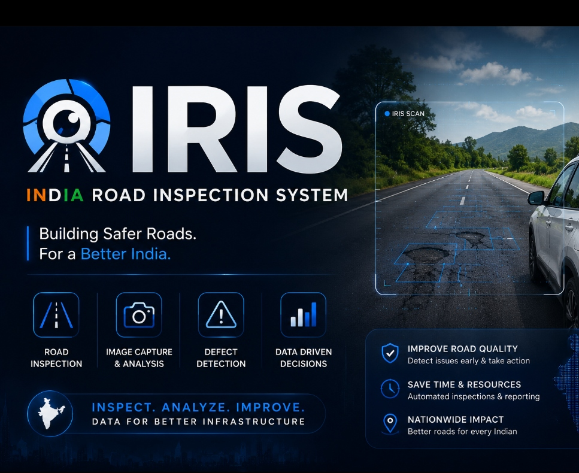
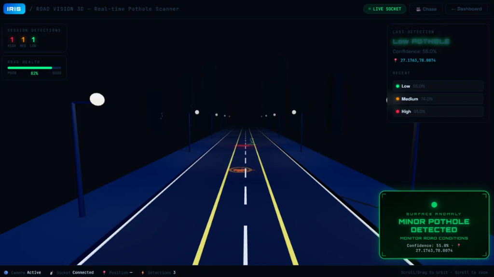
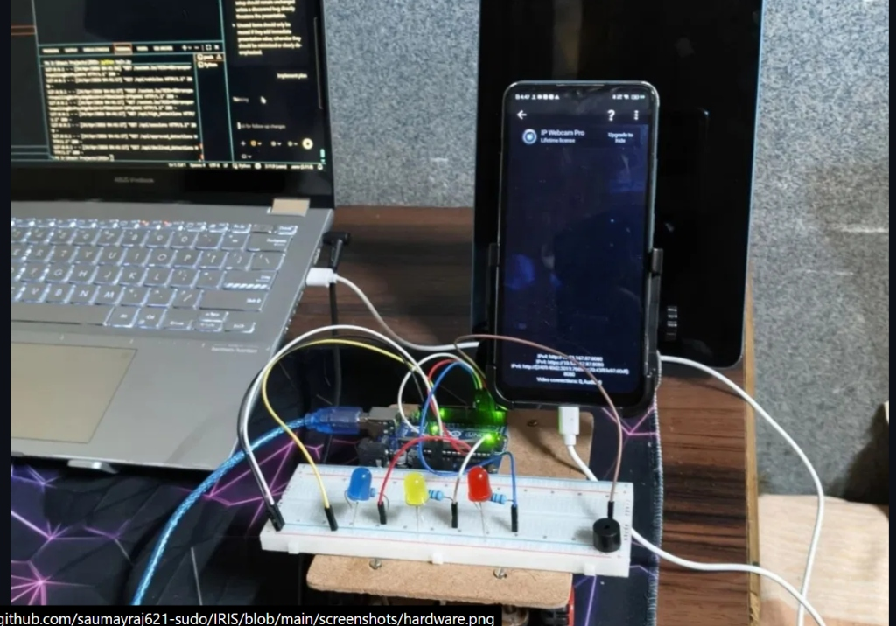

Project Overview
IRIS (Intelligent Road Inspection System) is an applied computer vision project engineered to assist municipal road safety monitoring by automatically identifying road anomalies, cracks, and potholes from dashcam and camera video feeds.
Instead of relying solely on periodic manual surveys or delayed citizen complaints, IRIS processes video streams through an image processing pipeline that isolates surface defects and generates actionable maintenance records.
The Problem
Road deterioration and unmonitored potholes cause millions in vehicle damage and severe transit accidents annually. Traditional road audits are labor-intensive, expensive, and fail to track rapid seasonal pavement degradation in a timely manner.
Architecture & Pipeline
Technology Stack


